Projekt "Wikinger-Häuser-Haithabu"
Infos zum Projekt unter:
Die Fotos habe ich am 13.08.2009 gefertigt
(Die einzelnen Bilder können durch Anklicken vergrößert werden!)
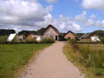
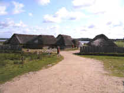
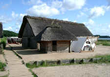
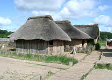
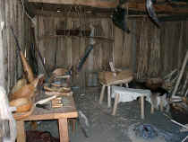
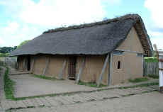
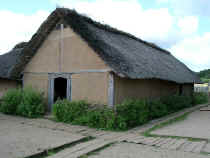
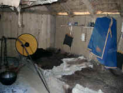
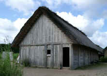
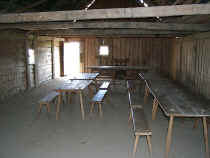
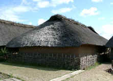
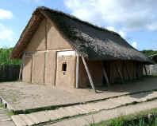
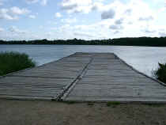
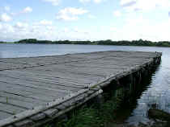
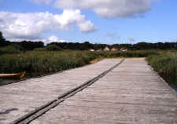
Die Fotos habe ich am 19.08.2005 gefertigt
(Die einzelnen Bilder können durch Anklicken vergrößert werden!)
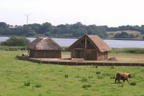
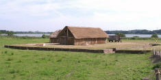
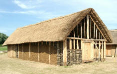
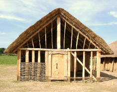
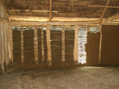
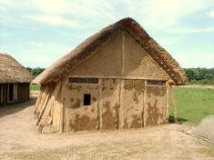